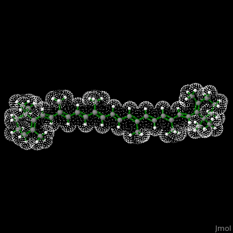

What are Lipids?
Lipids are organic compounds that are fatty acids or their derivatives. They are insoluble in water but soluble in organic solvents. They play a key role in storing energy and forming cell membranes.
Types of Lipids
- Fats
- Oils
- Waxes
- Phospholipids
- Steroids
Functions
- Long-term energy storage
- Insulation and protection
- Cell membrane structure (phospholipids)
- Hormone production (steroids)
Examples
- Butter
- Oil
- Ghee
- Cholesterol
- Fatty acids